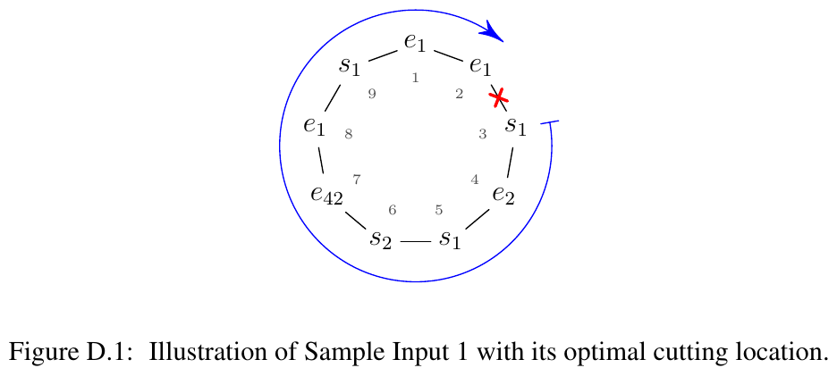

ICPC World Finals 2019 · Problem D
You have an internship with a bioinformatics research group studying DNA. A single strand of DNA consists of many genes, which fall into different categories called gene types. Gene types are delimited by specific nucleotide sequences known as gene markers. Each gene type i has a unique start marker si and a unique end marker ei. After many dirty jobs (growing bacteria, cell extraction, protein engineering, and so on), your research group can convert DNA into a form consisting of only the gene markers, removing all the genetic material lying between the markers.
Your research group came up with the interesting hypothesis that gene interpretation depends on whether the markers of some gene types form properly nested structures. To decide whether markers of gene type i form a proper nesting in a given sequence of markers w, one needs to consider the subsequence of w containing only the markers of gene type i (si and ei), leaving none of them out. The following (and only the following) are considered to be properly nested structures:
Given your computing background, you were assigned to investigate this property, but there is one further complication. Your group is studying a specific type of DNA called circular DNA, which is DNA that forms a closed loop. To study nesting in circular DNA, it is necessary to cut the loop at some location, which results in a unique sequence of markers (the direction of reading is fixed by molecular properties). Whether a gene type i forms a proper nesting now also depends on where the circular DNA is cut. Your task is to find the cutting location that maximizes the number of gene types that form a properly nested structure. Figure D.1 shows an example corresponding to Sample Input 1. The indicated cut results in the markers for gene type 1 being properly nested.

The first line of input contains an integer n (1 ≤ n ≤ 106), the length of the DNA. The next line contains the DNA sequence, that is, n markers. Each marker is a character c followed by an integer i, where c ∈ {s, e} specifies whether it is a start or an end marker and i (1 ≤ i ≤ 106) is the gene type of the marker. The given DNA sequence has been obtained from the circular DNA by cutting at an arbitrary location.
Output one line with two integers p and m, where p is the cutting position that maximizes the number of different gene types that form a proper nesting, and m is this maximum number of gene types. The DNA is cut just before the pth input marker (for instance, the cut shown in Figure D.1 has p = 3). If more than one cutting position yields the same maximum value of m, output the smallest p that does so.
9 e1 e1 s1 e2 s1 s2 e42 e1 s1
3 1
8 s1 s1 e3 e1 s3 e1 e3 s3
8 2